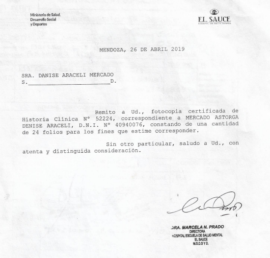

DE QUÉ SE TRATA
Ojo de loca nació en el baño de un hospital psiquiatrico, mirando las paredes y puertas escritas con fibras de distintos colores y corrector para tinta, "les deseo a todas pronta liberta" y "ojo de loca no se equivoca" como respuesta a ese comentario de esperanza en uno de los lugares más desoladores donde una loca puede encontrarse.
Abrir mi historia clinica mientras le abro mis costillas al mundo para que me vean palpitar y enloquecer y fusionarme en una, sensible y loca
Artistas que colaboraron con este proyecto
- Lorena Rosas
- Furio Interlandi
- Gabriel Echenique